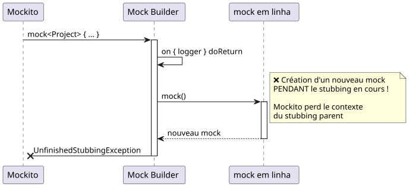
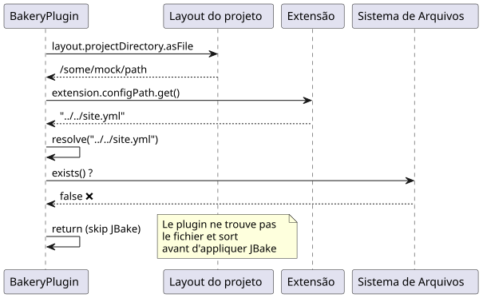
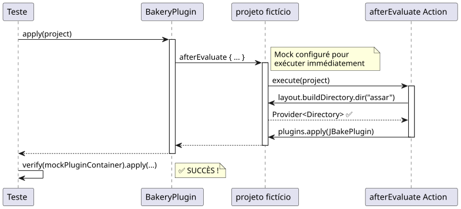

Debugging Mockito: Resolver o erro "Wanted but not invoked" nos testes de plugins Gradle
Publié le 17 November 2024
- Introdução
- O contexto: Plugin Gradle Bakery
- Problema #1: Verificar o mock errado
- Problema #2 : UnfinishedStubbingException em cascata
- Problema #3: O arquivo de configuração não existe
- Problema #4 : afterEvaluate e NullPointerException
- A solução completa
- Lições aprendidas
- Arquitetura de teste final
- Conclusão
- Recursos
Introdução
Durante o desenvolvimento do plugin GradlePadariapara meu blog JBake, encontrei um problema aparentemente simples: um teste unitário que falhou com o erro`Wanted but not invoked`. O que parecia ser um bug trivial revelou-se ser um caso de escola perfeito para entender as sutilezas do mocking com Mockito e Kotlin.
Neste artigo, levo você em uma jornada de depuração metódica, onde cada solução revela um novo problema, até a resolução final.
O contexto: Plugin Gradle Bakery
O plugin Bakery é um wrapper em torno do JBake que facilita a publicação de sites estáticos. Aqui está sua estrutura simplificada:
class BakeryPlugin : Plugin<Project> {
override fun apply(project: Project) {
val extension = project.extensions.create(
"bakery",
BakeryExtension::class.java
)
project.afterEvaluate {
if (!project.layout.projectDirectory.asFile
.resolve(extension.configPath.get()).exists()) {
println("config file does not exists")
} else {
// C'EST ICI QUE ÇA SE PASSE
project.plugins.apply(JBakePlugin::class.java)
val site = FileSystemManager.from(project, extension.configPath.get())
// Configuration de JBake...
}
}
}
}O teste que falhava era simples :
@Test
fun `plugin applies jbake gradle plugin`() {
val project = createMockProject()
val plugin = BakeryPlugin()
plugin.apply(project)
verify(project.plugins).apply(JBakePlugin::class.java)
}O erro :
Wanted but not invoked:
pluginContainer.apply(class org.jbake.gradle.JBakePlugin);
Actually, there were zero interactions with this mock.Problema #1: Verificar o mock errado
O diagnóstico

O problema: o Mockito não pode rastrear as interações em`project.plugins`porque é apenas um getter que retorna o mock real`mockPluginContainer`. Deve ser feita diretamente na instância do mock
A solução
Modificar`createMockProject()`para retornar os dois objetos :
private fun createMockProject(): Pair<Project, PluginContainer> {
val mockPluginContainer = mock<PluginContainer>()
val mockProject = mock<Project> {
on { plugins } doReturn mockPluginContainer
}
return Pair(mockProject, mockPluginContainer)
}E adaptar o teste :
@Test
fun `plugin applies jbake gradle plugin`() {
val (project, mockPluginContainer) = createMockProject()
val plugin = BakeryPlugin()
plugin.apply(project)
// ✅ Vérification directe sur le bon mock
verify(mockPluginContainer).apply(JBakePlugin::class.java)
}Problema #2 : UnfinishedStubbingException em cascata
O diagnóstico
Após a aplicação da primeira correção, um novo erro apareceu:
UnfinishedStubbingException:
Unfinished stubbing detected here
Hints:
3. you are stubbing the behaviour of another mock inside
before 'thenReturn' instruction is completedO código problemático usava a sintaxe DSL do Mockito-Kotlin :
val mockProject = mock<Project> {
on { extensions } doReturn mockExtensionContainer
on { plugins } doReturn mockPluginContainer
on { logger } doReturn mock() // ❌ PROBLÈME ICI !
}
A solução
CriartodosOs mocks fora de qualquer bloco de stubbing, depois configurá-los com`whenever()`:
private fun createMockProject(): Pair<Project, PluginContainer> {
// 1️⃣ Créer TOUS les mocks d'abord
val mockPluginContainer = mock<PluginContainer>()
val mockExtensionContainer = mock<ExtensionContainer>()
val mockLogger = mock<org.gradle.api.logging.Logger>()
val mockProject = mock<Project>()
// 2️⃣ Configurer les mocks séparément avec whenever()
whenever(mockProject.plugins).thenReturn(mockPluginContainer)
whenever(mockProject.extensions).thenReturn(mockExtensionContainer)
whenever(mockProject.logger).thenReturn(mockLogger)
return Pair(mockProject, mockPluginContainer)
}|
Regra de ouroNunca chamar`mock()`dentro de um bloco de configuração de mock. Sempre criar os mocks primeiro, depois configurá-los. |
Problema #3: O arquivo de configuração não existe
O diagnóstico
Mesmo com os mocks corretos, o teste sempre falhava porque o plugin não encontrava o arquivo de configuração :
// Dans BakeryPlugin.kt
if (!project.layout.projectDirectory.asFile
.resolve(extension.configPath.get()).exists()) {
println("config file does not exists")
return@afterEvaluate // ❌ Sort avant d'appliquer JBake !
}
A solução
Configurar os mocks para que a resolução do caminho funcione :
private fun createMockProject(): Pair<Project, PluginContainer> {
// ... autres mocks ...
val configFile = File("../../site.yml").canonicalFile
val projectDir = configFile.parentFile
// Configuration cohérente des chemins
whenever(mockConfigPathProperty.get()).thenReturn("site.yml")
whenever(mockProjectDirectory.asFile).thenReturn(projectDir)
// Maintenant : projectDir.resolve("site.yml") existe ! ✅
}Problema #4 : afterEvaluate e NullPointerException
O diagnóstico
O plugin aplica JBake em um bloco`afterEvaluate`, e acede a`buildDirectory.dir()`:
project.afterEvaluate {
// ...
project.tasks.withType(JBakeTask::class.java)
.getByName("bake").apply {
output = project.layout.buildDirectory
.dir(site.bake.destDirPath) // ❌ NPE ici !
.get()
.asFile
}
}O mock de`buildDirectory.dir()retornava`null.
A solução
zombar`afterEvaluate`para que ele execute imediatamente e configurar completamente`buildDirectory`(I will output nothing, as there is no provided text to translate.)
private fun createMockProject(): Pair<Project, PluginContainer> {
// ... autres mocks ...
val mockBuildDirectory = mock<DirectoryProperty>()
val buildDir = File(projectDir, "build")
// Mocker dir() pour retourner un Provider valide
whenever(mockBuildDirectory.dir(any<String>())).doAnswer { invocation ->
val path = invocation.arguments[0] as String
val mockDirProvider = mock<Provider<Directory>>()
val mockDir = mock<Directory>()
whenever(mockDir.asFile).thenReturn(File(buildDir, path))
whenever(mockDirProvider.get()).thenReturn(mockDir)
mockDirProvider
}
// Mocker afterEvaluate pour exécution immédiate
whenever(mockProject.afterEvaluate(any<Action<Project>>())).doAnswer { invocation ->
val action = invocation.arguments[0] as Action<Project>
action.execute(mockProject) // ✅ Exécution synchrone
null
}
return Pair(mockProject, mockPluginContainer)
}
A solução completa
Aqui está a função`createMockProject()`por fim, que resolve todos os problemas :
private fun createMockProject(): Pair<Project, PluginContainer> {
// 1️⃣ CRÉER tous les mocks (pas de nested mocks !)
val mockPluginContainer = mock<PluginContainer>()
val mockExtensionContainer = mock<ExtensionContainer>()
val mockLogger = mock<org.gradle.api.logging.Logger>()
val mockTaskContainer = mock<TaskContainer>()
val mockConfigPathProperty = mock<Property<String>>()
val mockBakeryExtension = mock<BakeryExtension>()
val mockProjectDirectory = mock<Directory>()
val mockBuildDirectory = mock<DirectoryProperty>()
val mockProjectLayout = mock<ProjectLayout>()
val mockProject = mock<Project>()
// 2️⃣ CONFIGURER la résolution des chemins
val configFile = File("../../site.yml").canonicalFile
val projectDir = configFile.parentFile
val buildDir = File(projectDir, "build")
whenever(mockConfigPathProperty.get()).thenReturn("site.yml")
whenever(mockConfigPathProperty.isPresent).thenReturn(true)
whenever(mockBakeryExtension.configPath).thenReturn(mockConfigPathProperty)
whenever(mockProjectDirectory.asFile).thenReturn(projectDir)
// 3️⃣ CONFIGURER buildDirectory avec dir()
whenever(mockBuildDirectory.dir(any<String>())).doAnswer { invocation ->
val path = invocation.arguments[0] as String
val mockDirProvider = mock<Provider<Directory>>()
val mockDir = mock<Directory>()
whenever(mockDir.asFile).thenReturn(File(buildDir, path))
whenever(mockDirProvider.get()).thenReturn(mockDir)
mockDirProvider
}
// 4️⃣ ASSEMBLER le projet
whenever(mockProjectLayout.projectDirectory).thenReturn(mockProjectDirectory)
whenever(mockProjectLayout.buildDirectory).thenReturn(mockBuildDirectory)
whenever(mockExtensionContainer.create("bakery", BakeryExtension::class.java))
.thenReturn(mockBakeryExtension)
whenever(mockExtensionContainer.getByType(BakeryExtension::class.java))
.thenReturn(mockBakeryExtension)
whenever(mockProject.extensions).thenReturn(mockExtensionContainer)
whenever(mockProject.plugins).thenReturn(mockPluginContainer)
whenever(mockProject.tasks).thenReturn(mockTaskContainer)
whenever(mockProject.layout).thenReturn(mockProjectLayout)
whenever(mockProject.logger).thenReturn(mockLogger)
whenever(mockProject.projectDir).thenReturn(projectDir)
// 5️⃣ CONFIGURER afterEvaluate pour exécution immédiate
whenever(mockProject.afterEvaluate(any<Action<Project>>())).doAnswer { invocation ->
val action = invocation.arguments[0] as Action<Project>
action.execute(mockProject)
null
}
return Pair(mockProject, mockPluginContainer)
}E o teste final que passa :
@Test
fun `plugin applies jbake gradle plugin`() {
val (project, mockPluginContainer) = createMockProject()
val plugin = BakeryPlugin()
plugin.apply(project)
verify(mockPluginContainer).apply(JBakePlugin::class.java) // ✅ SUCCÈS !
}Lições aprendidas

Verificar o mock correto
// ❌ FAUX
verify(project.plugins).apply(JBakePlugin::class.java)
// ✅ CORRECT
val (project, mockPluginContainer) = createMockProject()
verify(mockPluginContainer).apply(JBakePlugin::class.java)2. Evitar os mocks aninhados
// ❌ FAUX - UnfinishedStubbingException
val mockProject = mock<Project> {
on { logger } doReturn mock() // Nested mock creation !
}
// ✅ CORRECT - Créer séparément
val mockLogger = mock<org.gradle.api.logging.Logger>()
val mockProject = mock<Project>()
whenever(mockProject.logger).thenReturn(mockLogger)3. Simular os callbacks de avaliação
// ✅ afterEvaluate doit s'exécuter pour les tests
whenever(mockProject.afterEvaluate(any())).doAnswer { invocation ->
val action = invocation.arguments[0] as Action<Project>
action.execute(mockProject)
null
}4. Testar a resolução dos caminhos
// Toujours vérifier que les chemins se résolvent correctement
val extension = project.extensions.getByType(BakeryExtension::class.java)
val configPath = extension.configPath.get()
val projectDir = project.layout.projectDirectory.asFile
val resolvedConfig = projectDir.resolve(configPath)
println("Resolved config: ${resolvedConfig.absolutePath}")
println("Exists: ${resolvedConfig.exists()}")Arquitetura de teste final
Conclusão
O que parecia ser um simples problema de teste acabou sendo um excelente caso de estudo sobre:
-
As sutilezas do Mockito com Kotlin
-
A importância de mockar os objetos corretos
-
A gestão de callbacks assíncronos nos testes
-
A resolução de caminhos nos plugins Gradle
A depuração metódica, ao compreender cada camada do problema, permitiu chegar a uma solução robusta e manutenível.
|
Conselho para seus testesSe você encontrar "Wanted but not invoked" com Mockito, pergunte-se sempre : 1. Estou verificando o mock certo? 2. Todos os meus mocks são criados fora dos blocos de configuração? 3. Meus callbacks se executam realmente? 4. É que meus caminhos se resolvem corretamente? |
Recursos
Você encontrou problemas semelhantes nos seus testes? Compartilhe sua experiência nos comentários!